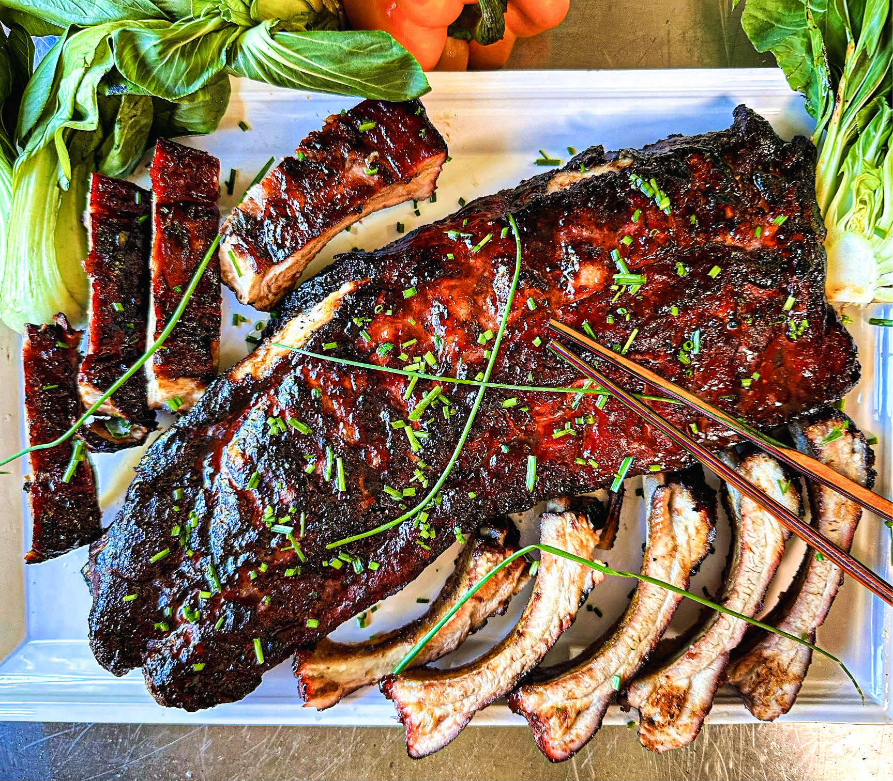

Char Siu Recipe

Description
Char Siu is a Cantonese-style barbecued pork, known for its sweet, savory, and slightly smoky flavor. The meat is marinated in a mixture of hoisin sauce, honey, soy sauce, Chinese five-spice, and red fermented bean curd, giving it a signature reddish glaze. It’s typically roasted until caramelized and tender, often served sliced with rice or noodles.
Ingredients
- 2 lbs pork shoulder or pork butt (cut into long strips, about 2" thick)
- 3 tablespoons hoisin sauce
- 2 tablespoons honey
- 2 tablespoons soy sauce
- 2 tablespoons oyster sauce
- 2 tablespoons Shaoxing wine (or dry sherry)
- 1 tablespoon brown sugar
- 1 tablespoon Chinese five-spice powder
- 1 tablespoon grated ginger
- 2 cloves garlic, minced
- 1–2 drops red food coloring (optional, for traditional color)
- 2 tablespoons honey
- 1 tablespoon hot water
Steps
- Marinate the Pork
- Roast the Pork
- Glaze and Finish
Home